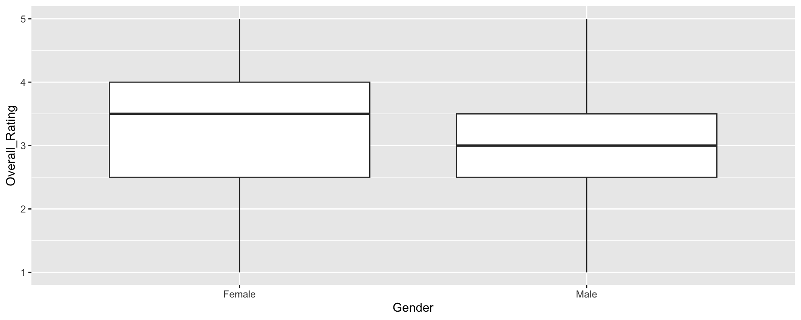
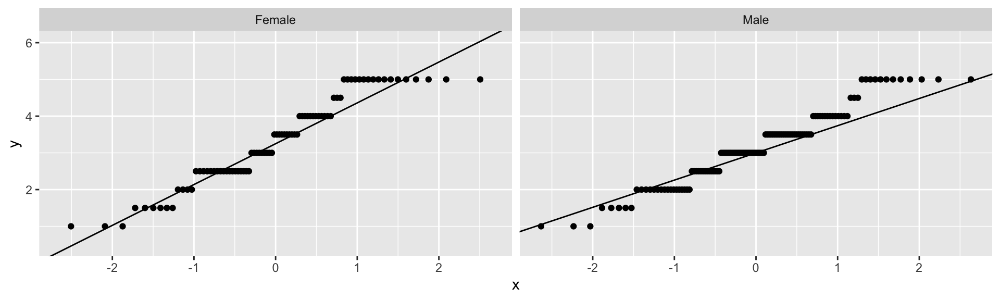

Tests, Functions, & Arguments
The primary function for conducting \(t\)-tests in R is t.test()
One sample \(t\)-test: t.test(..., mu = #)
Paired samples \(t\)-test: t.test(..., paired = TRUE)
Independent samples \(t\)-test: t.test(..., var.equal = TRUE)
Welch-Satterthwaite corrected \(t\)-test: t.test(..., var.equal = FALSE)
Wilcoxon signed-rank tests: wilcox.test()
t.test() functionLevene’s test (car::leveneTest)
The car (Companion to Applied Regression) package is one of the best R packages for many statistical procedures. We’ve already used it (in lecture) for Box-Cox transformations.
Today, we’ll work with data about restaurant ratings. A description of the variables in the data can be found at https://www.kaggle.com/code/sefercanapaydn/eda-on-a-restaurant-s-cuisine-ratings
Rows: 200
Columns: 15
$ User_ID <dbl> 1, 2, 3, 4, 5, 6, 7, 8, 9, 10, 11, 12, 13, 14, 15, 16…
$ `Area code` <dbl> 153, 123, 122, 153, 129, 111, 111, 153, 107, 129, 123…
$ Location <chr> "Upper East Side,NY", "St. George,NY", "Upper West Si…
$ Gender <chr> "Female", "Female", "Male", "Female", "Male", "Male",…
$ YOB <dbl> 2006, 1991, 1977, 1956, 1997, 1995, 1977, 2003, 1965,…
$ `Marital Status` <chr> "Single", "Married", "Single", "Married", "Single", "…
$ Occupation <chr> "Professional", "Student", "Student", "Professional",…
$ Budget <dbl> 3, 3, 5, 5, 4, 5, 5, 3, 5, 4, 4, 4, 5, 5, 3, 3, 5, 3,…
$ Cuisines <chr> "Japanese", "Indian", "Seafood", "Japanese", "Filipin…
$ Alcohol <chr> "Never", "Never", "Often", "Never", "Socially", "Neve…
$ Smoker <chr> "Never", "Socially", "Often", "Socially", "Never", "N…
$ Food_Rating <dbl> 5, 1, 5, 3, 2, 5, 1, 5, 3, 5, 3, 3, 5, 5, 1, 4, 2, 1,…
$ Service_Rating <dbl> 4, 1, 5, 1, 4, 1, 4, 2, 3, 2, 2, 1, 5, 2, 1, 1, 1, 5,…
$ Overall_Rating <dbl> 4.5, 1.0, 5.0, 2.0, 3.0, 3.0, 2.5, 3.5, 3.0, 3.5, 2.5…
$ Often <chr> "No", "No", "Yes", "No", "No", "No", "No", "Yes", "No…Let us test that the mean Food_Rating is significantly different from the middle scale value of 3. To conduct the one-sample \(t\)-test:
mu = 3 gives the null meanalternative = "two.sided" indicates a two-tailed test (other options are "less" and "greater")conf.level = .95 is 1 - type I error rateCohen’s \(d\) effect size is easily computed by hand:
You can also use cohens_d() from effectsize package:
APA style conclusion:
We conducted a one sample t-test comparing the average food rating (\(M\) = 3.22) to 3. The difference was significant, \(t\)(199) = 2.2, \(p\) = .029, but the effect was small, Cohen’s \(d\) = 0.16. 95% CI of the mean score = [0.02, 0.30].
We usually use paired samples t-tests when we compare measurements of the same individuals at different time points.
Paired-samples \(t\)-test two ways:
Output on next slides.
Why do these give the same result?
Calculate the effect size three ways:
To compare the means of two groups that are independent (e.g., treatment and control), we use independent samples t-tests.
Let us test whether there is a significant difference in Overall_Rating between females and males (the only two gender groups in these data).
First, recode the data to make interpretations easier:
Ordinary independent samples \(t\)-test (not Welch-Satterthwaite):
var.equal = TRUE means to NOT use the Welch-Sattherthwaite correction
Two Sample t-test
data: dat$Overall_Rating[dat$Gender == "Female"] and dat$Overall_Rating[dat$Gender == "Male"]
t = 1.2067, df = 198, p-value = 0.229
alternative hypothesis: true difference in means is not equal to 0
95 percent confidence interval:
-0.1186291 0.4927506
sample estimates:
mean of x mean of y
3.335366 3.148305
Two Sample t-test
data: Overall_Rating by Gender
t = 1.2067, df = 198, p-value = 0.229
alternative hypothesis: true difference in means between group Female and group Male is not equal to 0
95 percent confidence interval:
-0.1186291 0.4927506
sample estimates:
mean in group Female mean in group Male
3.335366 3.148305 And with Welch-Sattherthwaite correction:
Welch Two Sample t-test
data: dat$Overall_Rating[dat$Gender == "Female"] and dat$Overall_Rating[dat$Gender == "Male"]
t = 1.1696, df = 154.21, p-value = 0.244
alternative hypothesis: true difference in means is not equal to 0
95 percent confidence interval:
-0.1288966 0.5030181
sample estimates:
mean of x mean of y
3.335366 3.148305
Welch Two Sample t-test
data: Overall_Rating by Gender
t = 1.1696, df = 154.21, p-value = 0.244
alternative hypothesis: true difference in means between group Female and group Male is not equal to 0
95 percent confidence interval:
-0.1288966 0.5030181
sample estimates:
mean in group Female mean in group Male
3.335366 3.148305 Before we conduct analyses, it is best practice to evaluate test assumptions.
Independent observations
Normally distributed observations (or large \(N\)), no outliers
Independent pairs of observations
Normally distributed difference scores (or large \(N\)), no outliers
Independent observations
In each group, normally distributed difference scores (or large \(N\)), no outliers
Homogeneity of variance
The following slides show assumption checking for the independent samples \(t\) only
For the one-sample \(t\), can do the same analyses for the one group.
For the paired-samples \(t\), can do the same analyses on the difference scores.
We inspect outliers in various ways such as (a) comparing the (group) means to the trimmed (group) means, and (b) boxplots. For comparing group means, it is helpful to use the tidy group_by function to calculate statistics separately by group.
The mean and the 5% trimmed mean are very close for each group.
To construct box plots for multiple groups, set the first aes() element to the grouping variable.

No outliers are suggested by the box plot either, so there do not appear to be outliers in this data set.
Normality can be evaluated in several ways, including (1) skewness and kurtosis for each group, (2) histogram + normal curve for each group, (3) kernal density plot + normal curve for each group, and (4) QQ plot for each group.
Skewness and kurtosis calculations are available from the e1071 package. These calculations show little skew but some negative kurtosis in each gender group.
Next, let’s look at histograms and kernel density plots for each group. We use the group means and standard deviations computed in the previous step. These plots also suggest minor deviations from normality, largely due to the discrete-like values.
Finally, we will construct QQ plots for each group. Here, it is useful to use the facet_wrap(~group) option in ggplot to draw separate plots for each group. (We didn’t use facet_wrap for the histograms/kernel density plots because it’s tricky to get the correct normal curves imposed.)

The QQ plots also suggest minor deviations from normality. Overall, because sample size is moderate and the independent samples \(t\)-test is robust to violations of normality, violations of this assumption likely do not affect our results.
This test only applies for independent samples data.
We can do Levene’s test in two ways and get the same results.
We reject Levene’s test, so we definitely want to use the Welch-Satterthwaite correction.
Let’s do the Welch-Satterthwaite correction. This is the default with t.test, so we get the same results if we don’t specify var.equal = FALSE.
Welch Two Sample t-test
data: dat$Overall_Rating by dat$Gender
t = 1.1696, df = 154.21, p-value = 0.244
alternative hypothesis: true difference in means between group Female and group Male is not equal to 0
95 percent confidence interval:
-0.1288966 0.5030181
sample estimates:
mean in group Female mean in group Male
3.335366 3.148305
Welch Two Sample t-test
data: Overall_Rating by Gender
t = 1.1696, df = 154.21, p-value = 0.244
alternative hypothesis: true difference in means between group Female and group Male is not equal to 0
95 percent confidence interval:
-0.1288966 0.5030181
sample estimates:
mean in group Female mean in group Male
3.335366 3.148305 If we don’t feel comfortable with the assumptions of \(t\)-tests (particularly the assumption of a normal sampling distribution), we can run Wilcoxon tests instead.